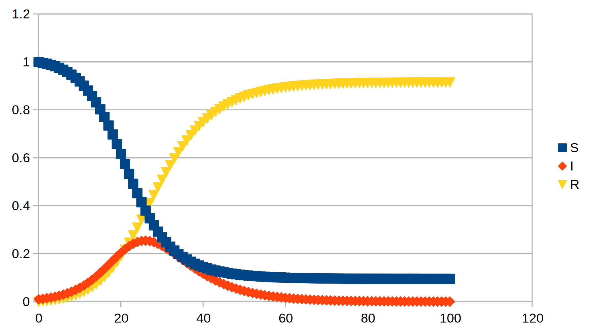
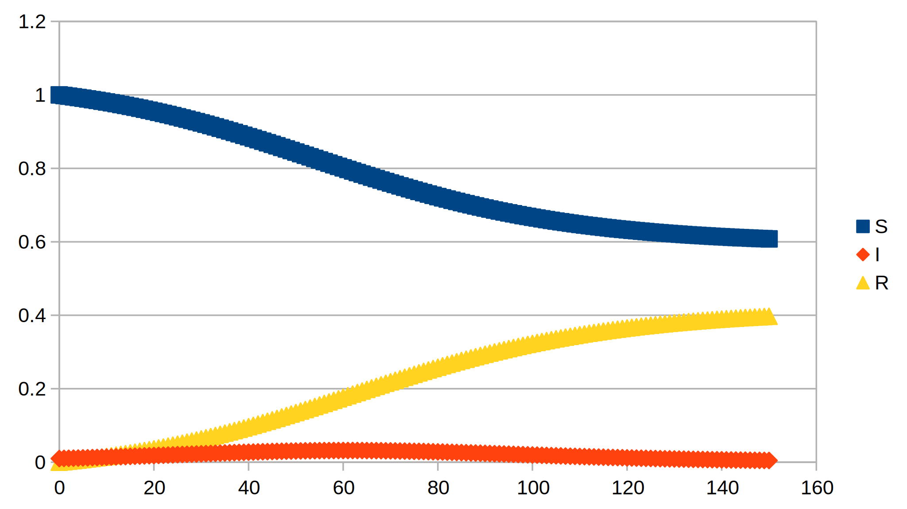

SIR models and Covid-19 spread
4 Implementing the model
There are a number of ways of using the information gleaned above to see how the SIR model operates. We could just use population figures, that is numbers of people. That would perhaps be the human thing to do, but I am a cold-hearted scientist (trying to forget that I may be one of the dead in a few weeks). Here, I will express SIR in terms of proportions of the total population. This can be expressed as a fraction using one the various representations: decimal, percentage, ratio, etc. This gives the “sum rule”:
\[S + I + R = 1\]
The problem now is to find the initial values and then let our spreadsheet program crank out a projection. The initial value of S is probably near 1 in mid-March, I would be smaller, and finally R would be a handful one would have thought. However, looking at the data that the UK government has issued, suggests severe under-reporting of I, and possibly R. On 7 April 2020, there were 55k confirmed cases, and 6k deaths, cumulatively. This either suggests a very high death rate of more than 10%, while elsewhere in the world (with better data from better testing regimes) the death rate is reported as around 1%. Assuming that R is still negligible, I would be 550k/70M, or about 0.008. Since we're dealing in very fuzzy knowledge here, I will take the I-value as 1/100. Hence S is indeed still around 1. Now α and β are “known”, we can go ahead. I got the graph:

The peak can be expected in about 25 days. Given the infection and disease presentation progress over a similar length of time, the model is clearly inadequate. Even so, the model suggests there may be about 10% of the population uninfected at the end of this. We have an “at risk” population of over 60s (including me) of around 20%. Other at-risk factors, “pre-existing conditions” in health business-speak, will add to this. Also note that the peak reaches more than 20% of the population — a level that would probably break the health system, particularly that many of the health professionals exposed early on will be among the patients at that time.
Of course, the UK has instituted partial lock-downs of work and “social distancing”. Let us assume this halves the reproduction number. Here we have to be careful and fix β rather than γ, since we expect the disease to progress to recovery as before. This makes a dramatic difference:

The peak of the population with the infection comes after about 60 days at the 3% level (a barely visible blip in the graph). One hopes that the health service could cope, but I don't know enough about that. The situation becomes relatively stable after 150 days. This, for those itching to get back to “normal”, is a problem. We are talking about almost half a year in lock-down. Even then, the loosening of restrictions would start the process over without effective treatments.